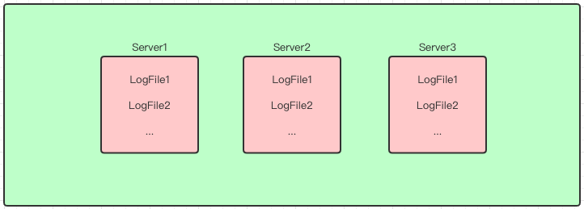
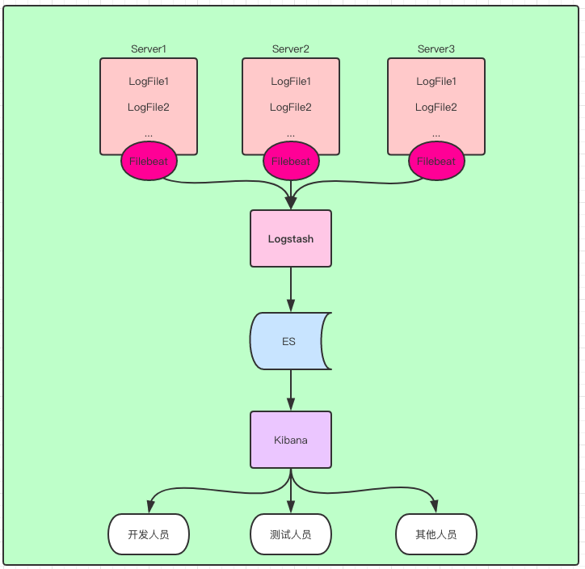
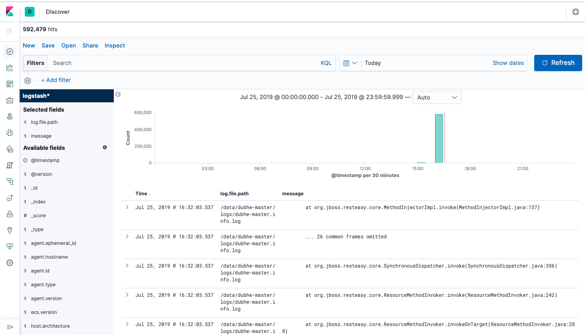

需求
公司里目前各个服务部署在不同的服务器上，每个服务有自己的日志文件，日志缺乏统一查看的地方，平时看日志得去 SSH 到服务器上去才能看，不方便排查问题：

另外，有些服务器对不同岗位的人权限是分开的，比如测试服务器上，只有测试人员才能通过 SSH 登录到服务器，开发人员是没权限登录的，开发人员想查问题就得找测试人员去一个个要日志了，测试人员也得陪着开发去一个个找，大家都难受。
所以，就想着通过 Logstash 将日志汇聚到 ES 里，让大家通过同一个口子—— kibana 来查看服务日志。

测试环境
- CentOS 7.5
- Java 1.8
- Logstash 7.2.0
- ES 7.2.0
- Filebeat 7.2.0
- Kibana 7.2.0
安装
直接从官网下载压缩包解压即可，参考官网
Filebeat
监控文件的变化以及读文件，是通过 Filebeat 实现的，下载好 Filebeat 后，修改 Filebeat 的配置文件:
1 | filebeat.inputs: |
上述配置表明，Filebeat 将监控并读取两个日志文件，然后将日志内容传给 Logstash。
启动 Filebeat: nohup ./filebeat -e -c filebeat.yml -d "publish" >> filebeat.log 2>&1 &
Logstash pipeline
Logstash 是通过 pipeline 的方式来完成整个日志接收、处理和传送过程的，先创建一个空的 pipeline 文件 test.conf:
1 | input { |
pipeline 中的 input 用于接收 Filebeat 传来的内容，Logstash 通过自带的 Beats input 插件来接收，在 input 中添加 beats :
1 | input { |
filter 用于内容转换，暂时先放着不管。
output 为输出，这里将日志内容输出到 ES 中，在 output 中添加 ES 信息（ES 需提前安装好）:
1 | output { |
检查 pipeline 文件格式是否正确:
1 | bin/logstash -f test.conf --config.test_and_exit |
如果返回内容显示 Config Validation Result: OK. 则表名 pipeline 文件配置正确，否则需要检查 pipeline 文件内容。
启动 logstash:
1 | nohup bin/logstash -f test.conf --config.reload.automatic >> logstash.log 2>&1 & |
Kibana
打开 kibana，过滤查看字段 log.file.path 和 message 来查看日志内容:

总结
通过简单的配置，练习了从 日志文件 -> Filebeat -> logstash -> ES -> Kibana 的过程，简单实现了最原始的需求：不同地方的日志从统一一个口子查看。
参考资料
ES 官方文档: https://www.elastic.co/guide/en/logstash/current/advanced-pipeline.html
(全文完)